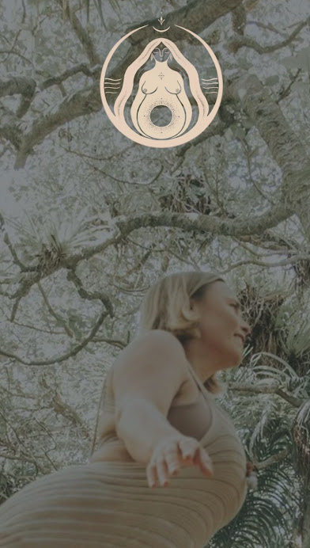

Mumma Marama
Logo suite, symbols, and a tidal palette for a birthkeeper.
A curated look at recent projects, from brand identities to illustration and packaging-ready assets.
More in-depth case studies can be shared on request.

Logo suite, symbols, and a tidal palette for a birthkeeper.
.zip%20-%2013.PNG)
Packaging-ready marks and labels for a honey apothecary range.

Community-led brand templates and social media cohesion.
.zip%20-%207.jpg)
Earthy iconography and submarks for ritual offerings.

Logo and symbol set for a retreat offering.

Logo and visual mark for a soulful studio.
).zip%20-%2050.PNG)
Custom templates for consistent online storytelling.

Illustration and visual exploration from the studio.
Share your project and I can send relevant case studies and examples.
Request samples